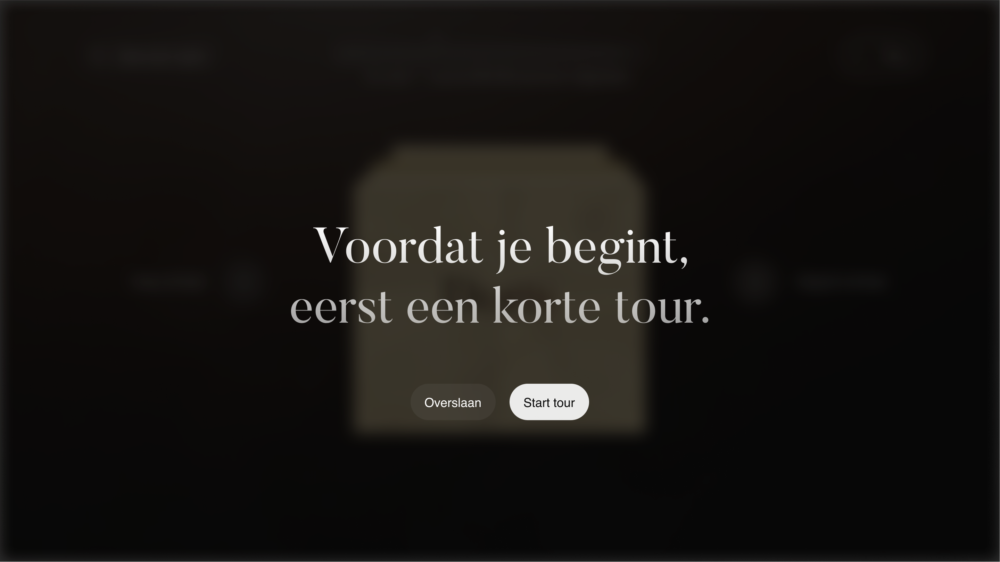
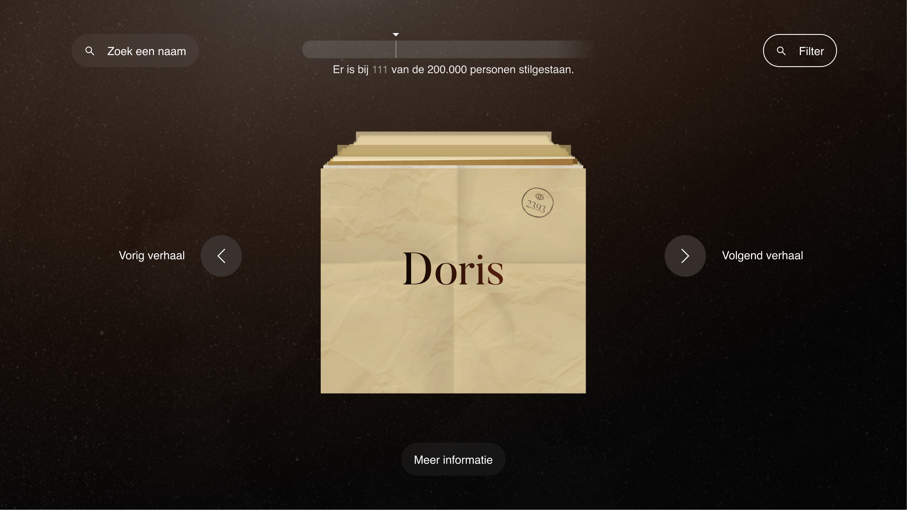
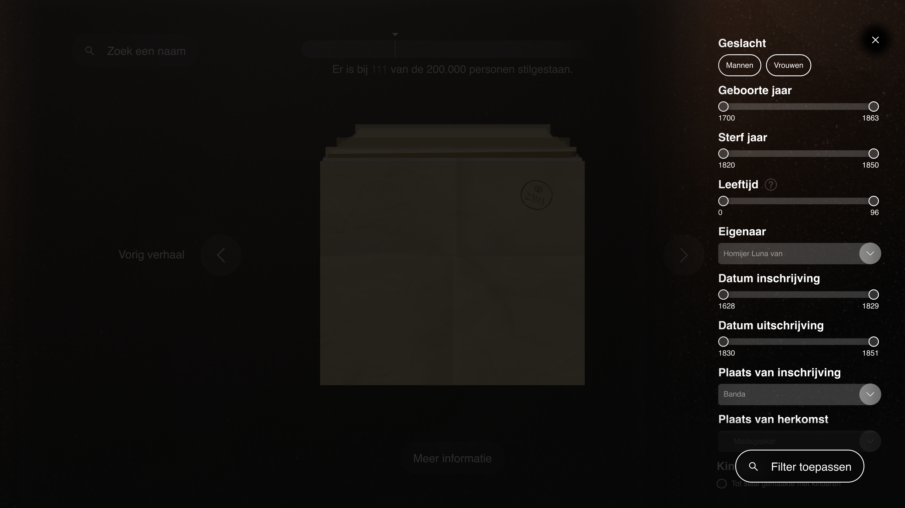
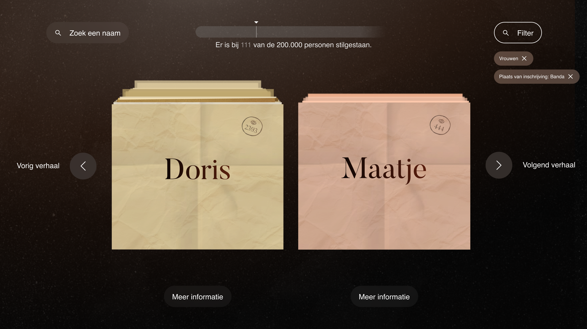
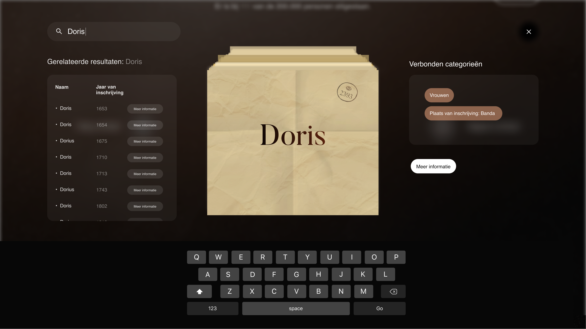
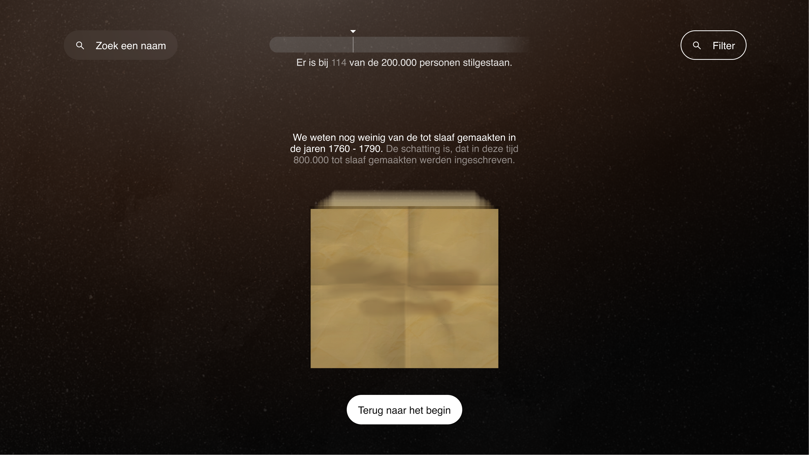

Design Challenge
Hoe kan een namenmonument over tot slaaf gemaakten, persoonlijkheid geven aan dé tot slaaf gemaakten en tegelijkertijd verbinding creëren met de bezoeker?
Situatieschets
Het Tropenmuseum heeft 2 datasets aangeleverd. Één uit het Oosten, hier staan ongeveer 4.000 mensen in. En één uit het Westen, hier staan ongeveer 160.000 mensen in. Voor iedere persoon in de dataset is een naam bekend, daarnaast kan er ook data bekend zijn over bijvoorbeeld het jaar van inschrijving, de leeftijd of een kleine notitie over het leven van diegene.
Ons monument wordt getoond door middel van een groot scherm. Dit scherm bestaat uit 3 doeken waar met 3 beamers een visualisatie op geprojecteerd kan worden. Voor deze 3 doeken staan drie 42-inch touchscreens. De gebruiker kan hier interactie hebben met het monument en namen opzoeken in de data.
Het grote scherm
Op het grote scherm wordt een animatie afgespeeld waarbij personen door een landschap lopen. De hele scene is gemaakt van ongeveer 165.000 papiertjes. Deze papiertjes staan voor de personen uit de datasets.
De personen die door de scene heen lopen staan symbool voor één van de 2.000.000 geschatte tot slaaf gemaakten.
Al deze 2.000.000 tot slaaf gemaakten zullen in 10 jaar door scherm lopen.
Als de animatie zich 10 uur per dag afspeelt krijg je deze berekening:
60 minuten x 10 uur = 600 minuten per dag. 600 minuten x 365 dagen = 219.000 minuten per jaar. 219.000 minuten x 10 jaar = 2.190.000 minuten per 10 jaar 2.190.000 minuten / 2.000.000 ≈ 1 minuut en 6 seconden.
Een tot slaaf gemaakte heeft dus bij een animatie van 10 uur per dag 1 minuut en 6 seconde om door het beeld heen te lopen.
De touchscreens

- 
- 

- 
- 
- 
- 
Op de touchscreens worden de ongeveer 165.000 namen van de tot slaaf gemaakten getoond. De gebruiker kan zelf door de namen heen scrollen. Als de gebruiker 2 seconde op een naam stil staat is de persoon ‘gezien’. Bovenin het scherm is een progress bar te zien. Als een persoon gezien is die nog nooit eerder gezien was wordt hij of zij aan de progress bar toegevoegd.
Voel de interactie zelfInteractief prototype
De verhalen

Tussen de ongeveer 165.000 namen op de touchscreen zitten ook uitgebreidere verhalen over verschillende tot slaaf gemaakten. De gebruiker kan deze verhalen vinden door door de stapel heen te scrollen. Of door de knoppen aan weerzijde van de stapel te gebruiken.
Middels scrollytelling kan de gebruiker door de verhalen van de tot slaaf gemaakte heen scrollen. De gebruiker kan op ieder moment het verhaal verlaten om terug te keren naar de stapel.
Interactie
Op het moment dat de gebruiker een filter aanzet op de touchscreens wordt de kleur van het filter ook getoond op de touchscreens. Omdat de papiertjes dezelfde papiertjes zijn als op het grote scherm.
Op het moment dat de gebruiker stilstaat bij een papiertje op de touchscreen wordt deze uitgelicht op het grote scherm. Dit gebeurt bij iedere touchscreen, je kan dus 3 papiertjes uitgelicht zien van alle 3 de touchscreen.